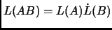
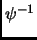
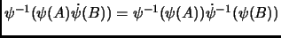
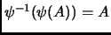
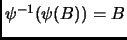
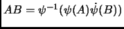

Next: Chain Multiplication Structure
Up: Wavelet Matrix Multiplication
Previous: What is
A reminder from Dr. Sinzinger, wavelets and their inverses are linear operators. As he correctly reminded me any linear operator has the following properties:
-

-  is a linear operator
-

-

-

- Therefore:

Thus this is sufficient proof that wavelet matrix multiplication is sound.
Daniel Beatty
2003-06-03